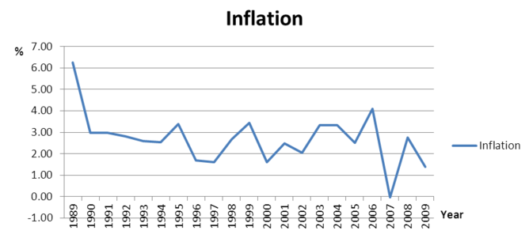
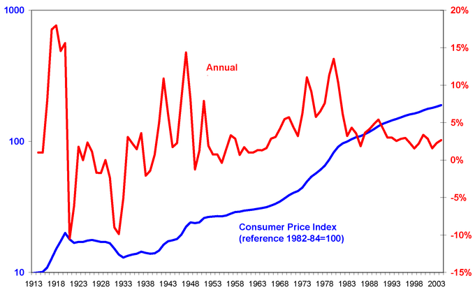

Table of Contents
21. Inflation
21.1. Defining, Measuring, and Assessing Inflation
21.1.1. Defining Inflation
21.1.2. Measuring Inflation
21.1.3. Price Indices and the Rate of Change of Prices
21.1.4. The Costs of Inflation
21.1.5. Distribution Effects of Inflation
21.1.6. Deflation
21. Inflation
21.1. Defining, Measuring, and Assessing Inflation
21.1.1. Defining Inflation
Inflation is an increase in average price levels.
Learning Objective
Use the quantity theory of money to explain inflation
Key Points
- Inflation refers to the average changes in price economy-wide, not the change in price in a particular industry. Further, inflation refers to the rate of change in prices, not the level of prices at any one time.
- Most economists agree that in the long run, inflation depends on the money supply.
- The idea that increasing the supply of money increases the price levels is known as the quantity theory of money.
- In mathematical terms, the quantity theory of money is based upon the following relationship: M x V = P x Q; where M is the money supply, V is the velocity of money, P is the price level, and Q is total output.
- While most agree with the basic principles behind the quantity theory of money in the long run, many argue that it does not apply in the short run.
Key Terms
- money supply
- The total amount of money (bills, coins, loans, credit, and other liquid instruments) in a particular economy.
- velocity of money
- The average frequency with which a unit of money is spent on new goods and services produced domestically in a specific period of time.
- inflation
- An increase in the general level of prices or in the cost of living.
Inflation is a persistent increase in the general price level of goods and services in an economy over a period of time. Specifically, the rate of inflation is the percent increase of prices from the start to the end of the given time period (usually measured annually).
When the general price level rises, each unit of currency buys fewer goods and services. Consequently, inflation reflects a reduction in the purchasing power per unit of money – a loss of real value in the medium of exchange and unit of account within the economy.
The decrease in purchasing power means that inflation is good for debtors and bad for creditors. Since debtors usually pay back loans in a nominal amount, they want to give up the least purchasing power possible. For example, if you borrowed money and have to pay back \$100 next year, you'd like that \$100 to be worth as little as possible. Conversely, creditors don't like inflation because the money they are getting paid is can purchase less than if there were no inflation.
What Causes Inflation?
When looking at individual goods, price changes may result from changes in consumer preferences, changes in the price of inputs, changes in the price of substitute or complement goods, or many other factors. When looking at the inflation rate for an entire economy, however, these microeconomic factors are relatively unimportant.
Instead, most economists agree that in the long run, inflation depends on the money supply. Specifically, the money supply has a direct, proportional relationship with the price level, so if, for example, the currency in circulation increased, there would be a proportional increase in the price of goods. To understand this, imagine that tomorrow, every single person's bank account and salary doubled. Initially we might feel twice as rich as we were before, but prices would quickly rise to catch up to the new status quo. Before long, inflation would cause the real value of our money to return to its previous levels. Thus, increasing the supply of money increases the price levels. This idea is known as the quantity theory of money .

While the two variables are not exactly equivalent in the short run, over time the money supply has had a direct relationship to the level of inflation. This is consistent with the quantity theory of money.
In mathematical terms, the quantity theory of money is based upon the following relationship: M x V = P x Q; where M is the money supply, V is the velocity of money, P is the price level, and Q is total output. In the long run, the velocity of money (that is, how quickly money flows through the economy) and total output (that is, an economy's Gross Domestic Product) are exogenous. If all other factors are held constant, an increase in M will require an increase in P. Thus, an increase in the money supply requires an increase in the price level (inflation).
While most agree with the basic principles behind the quantity theory of money in the long run, many argue that it does not apply in the short run. John Maynard Keynes, for example, disagreed that V and Q are exogenous and stable in the near-term, and therefore a change in the money supply may not produce a proportional change in the price level. Instead, for example, an increase in the money supply could boost total output or cause the velocity of money to fall.
21.1.2. Measuring Inflation
Inflation is measured as a percentage rate of change in the level of prices.
Learning Objective
Describe inflation and how to measure it
Key Points
- Economists typically measure the price level with a price index.
- A price index is a number whose movement reflects movement in the average level of prices. If a price index rises 10%, it means the average level of prices has risen 10%.
- The price index is the proportion of the cost of a basket of goods in one period to the cost of the same basket of goods in a previous base period. If the price index is currently 103, for example, the inflation rate was 3% between the base period and today.
Key Terms
- market basket
- A list of items used specifically to track the progress of inflation in an economy or specific market.
- purchasing power
- The amount of goods and services that can be bought with a unit of currency or by consumers.
The inflation rate is widely calculated by calculating the movement or change in a price index, usually the consumer price index (CPI) The consumer price index measures movements in prices of a fixed basket of goods and services purchased by a "typical consumer".
CPI is usually expressed as an index, which means that one year is the base year. The base year is given a value of 100. The index for another year (say, year 1) is calculated by
The percent change in the CPI over time is the inflation rate.
For example, assume you spend your money on bread, jeans, DVDs, and gasoline, and you'd like to measure the inflation that you experience with this basket of goods. In the base period you purchased three loaves of bread (\$4 each), two pairs of jeans (\$30 each), five DVDs (\$20 each), and 10 gallons of gasoline (\$3.50 each). The price of the basket of goods in the base period is the total money spent on this quantity of items at the base period prices; in this case, this equals \$207.
Now imagine that in the current period, bread still costs \$4, jeans are \$35, DVDs are \$18, and gasoline is \$4. Using the quantities from the base period, the total cost of the market basket in the current period is \$212. The price index is (212/207)*100, or 102.4. This means that the inflation rate between the base period and the current period was 2.4%.
In everyday life, we experience inflation as a loss in the purchasing power of money. When the inflation rate is 2.4%, it means that a dollar can buy 2.4% fewer goods and services than it could in the previous period. When inflation is steady, incomes will generally compensate for the effects of inflation by rising or falling at approximately the same rate as the general price level. Money saved as currency, however, will lose its value if inflation occurs .
{kind=link}
The U.S. inflation rate is measured by comparing the price of goods in one year to the price of goods in a previous base year.
21.1.3. Price Indices and the Rate of Change of Prices
Price indices are tools used to measure price changes for a specific subset of goods and services.
Learning Objective
Explain how inflation is measured through price indices
Key Points
- Price indices are often normalized and compared to a base year.
- The basket of goods determines which prices are being compared.
- The most commonly used formula is the Laspeyres price index, which determines a basket of goods during a base period, finds the price of this basket, and then compares that to the price of the same basket of goods in a later period of time.
- An alternate type of index, the Paasche index, finds a basket of goods in the current period, determines it's total price, and compares that price to what the current basket of goods would have cost in the base period.
- The Consumer Price Index (CPI) and the Producer Price Index (PPI) are commonly used inflation indices. The CPI reflects changes in the prices of goods and services typically purchased by consumers.
- The PPI reflects changes in the revenue that producers receive for goods and services.
Key Terms
- cost of living
- The average cost of a standard set of basic necessities of life, especially of food, shelter and clothing
- price index
- A statistical estimate of the level of prices of some class of goods or services.
Price Indices
Price indices are tools used to measure price changes for a specific subset of goods and services. A price index is a statistic designed to help compare how a normalized average of prices differ between time periods. Broad price indices, such as the consumer price index (CPI) or the GDP deflator are often used to measure inflation throughout the entire economy, while narrower ones, such as the consumer price index for the elderly (CPI-E) measure the inflation experienced by specific groups of people or industries.
In order to calculate a price index, one must specify a base period and a basket of goods. The base period is the time period against which costs in other periods will be compared. Most often, the base period for an index is a single year and normalized. For example, a the CPI could select 1950 as the base year. In 1950, the CPI would have a value of 100 (this is not the cost of the basket, just a normalized value). Suppose that in 1960, the cost of the basket has increased 15%. The CPI in 1960 would then be listed as 115 (15% greater than the base year).
The basket of goods determines which prices are being compared. If a price index wanted to measure the inflation experienced by young people on the west coast of the United States, for example, it would first have to calculate which goods these particular consumers purchase and in what quantities. For example, this population may spend 40% of its income on housing, 10% on food, 10% on transportation, 20% on entertainment, and 20% on surfing supplies. The basket of goods should reflect these proportions.
Calculating Price Indices
There are different ways to calculate price indices. Suppose we want to find the inflation rate for consumers who, in the base period, bought an average of five CDs (\$10 each), eight cans of soda (\$1.5 each), and two pairs of shoes (\$40 each). In the current period, the same type of consumer bought an average of four CDs (\$12 each), six cans of soda (\$2 each), and two pair of shoes (\$45 each). One very basic approach to finding this price index might multiply the items' cost and the quantity bought in the base period, and compare that to the cost and quantity in the current period. This calculation would give:
5*10+8*1.5+2*40 = 142 (base period)
4*12+6*2+2*45 = 150 (current period)
Price index = (150/142)*100 = 105.6
This would show that inflation was 5.6%.
However, this is not a very practical way to measure the change in prices since it compares two different baskets of goods. In this type of approach, a higher index number in the current period might mean that prices have gone up, but it might also mean that incomes have risen and people are simply buying more goods. The Laspeyres index and the Paasche index are two price indexes that attempt to compensate for this difficulty.
The most commonly used formula is a form of the Laspeyres price index, which determines a basket of goods during a base period, finds the price of this basket, and then compares that to the price of the same basket of goods in a later period of time. Using the example above, the base period index would be 5*10+8*1.5+2*40=142, and the current period index would be 5*12+8*2+2*45 = 166. The Laspeyres price index is (166/142)*100=116.9, giving an inflation rate of 16.9%.
An alternate type of index, the Paasche index, finds a basket of goods in the current period, determines it's total price, and compares that price to what the current basket of goods would have cost in the base period. Again, using the above example, the base period index would be 4*10+6*1.5+2*40=129, and the current period index would be 4*12+6*2+2*45=150. The Paasche index is (150/129)*100=116.3, giving an inflation rate of 16.3%.
Common Price Indices
Two common price indices are the Consumer Price Index (CPI) and the Producer Price Index (PPI). The CPI reflects changes in the prices of goods and services typically purchased by consumers, and includes price changes in imported goods. The CPI is often used to measure changes in the cost of living .
{kind=link}
The above graph shows the annual inflation rate and the consumer price index from 1913 to 2003. As long as the inflation rate was above zero, the CPI was increasing.
The PPI, on the other hand, reflects changes in the revenue that producers receive in return for goods and services. The PPI, unlike the CPI, includes price changes for goods produced within the US but exported abroad. It also does not include sales and excise taxes, nor does it include distribution costs. While we often expect the CPI and PPI to show similar rates of inflation, they measure two different sets of price changes.
21.1.4. The Costs of Inflation
The costs of inflation include menu costs, shoe leather costs, loss of purchasing power, and the redistribution of wealth.
Learning Objective
Show inflation's impact on purchasing power
Key Points
- In economics, a menu cost is the cost to a firm resulting from changing its prices. With high inflation, firms must change their prices often in order to keep up with economy-wide changes.
- Shoe leather cost refers to the cost of time and effort that people spend trying to counter-act the effects of inflation, such as holding less cash and having to make additional trips to the bank.
- Money loses value with inflation, leading to a drop in the purchasing power of an individual dollar. Unless wages increase with inflation, individuals' purchasing power will also drop.
- Unexpected inflation redistributes wealth from creditors to debtors.
- Other costs of high and/or unexpected inflation include the economic costs of hoarding and social unrest.
Key Terms
- purchasing power
- The amount of goods and services that can be bought with a unit of currency or by consumers.
- shoeleather costs
- The cost of time and effort that people spend trying to counter-act the effects of inflation.
- menu costs
- The cost to a firm resulting from changing its prices.
Economists generally regard a relatively low, stable level of inflation as desirable. When inflation is stable and expected, the economy is generally able to adjust easily to slowly rising prices. Further, a low level of inflation encourages people to invest their money in productive projects rather than keeping savings in the form of unproductive currency, since inflation will slowly erode the value of money. However, inflation does have some economic costs, especially when it is high or unexpected.
Menu Costs
In economics, a menu cost is the cost to a firm resulting from changing its prices. The name stems from the cost of restaurants literally printing new menus, but economists use it to refer to the costs of changing nominal prices in general. With high inflation, firms must change their prices often in order to keep up with economy-wide changes, and this can be a costly activity: explicitly, as with the need to print new menus, and implicitly, as with the extra time and effort needed to change prices constantly.
The cost to a restaurant to change the prices on menus is incurred even with low and expected inflation.
Shoeleather Costs
Shoeleather cost refers to the cost of time and effort that people spend trying to counteract the effects of inflation, such as holding less cash, investing in different currencies with lower levels of inflation, and having to make additional trips to the bank. The term comes from the fact that more walking is required (historically, although the rise of the Internet has reduced it) to go to the bank and get cash and spend it, thus wearing out shoes more quickly. A significant cost of reducing money holdings is the additional time and convenience that must be sacrificed to keep less money on hand than would be required if there were less or no inflation.
Loss of Purchasing Power
By definition, inflation causes the value of an individual dollar to decrease over time. Each dollar has less purchasing power with inflation. Thus, individuals who have the same wage next year as this year will be able to purchase less. Purchasing power can be maintained if wages increase exactly at the rate of inflation, but this is not always the case. When wages increase less than the rate of inflation, people lose purchasing power.
Redistribution of Wealth
The effect of inflation is not distributed evenly in the economy, and as a consequence there are hidden costs to some and benefits to others from this decrease in the purchasing power of money. For example, with inflation, those segments in society which own physical assets (e.g. property or stocks) benefit from the price of their holdings going up, while those who seek to acquire them will need to pay more for them.
Their ability to do so will depend on the degree to which their income is fixed. For example, increases in payments to workers and pensioners often lag behind inflation, and for some people income is fixed.
Other Costs
Other costs of high and/or unexpected inflation include the economic costs of hoarding and social unrest. When prices are rising quickly, people will buy durable and nonperishable goods quickly as a store of wealth, to avoid the losses expected from the declining purchasing power of money. This can create shortages of hoarded goods and removes an economy from the efficient equilibrium. Further, inflation can lead to social unrest . For example, rises in the price of food is considered to be a contributing factor to the 2010-2011 Tunisian revolution and the 2011 Egyptian revolution (though it was certainly not the only one).
21.1.5. Distribution Effects of Inflation
Unexpectedly high inflation tends to transfer wealth from creditors to debtors and from the rich to the poor.
Learning Objective
Discuss how inflation affects distribution and creates winners and losers
Key Points
- Inflation is good for borrowers and bad for lenders because it reduces the value of the money paid back to the lenders.
- The inflation rate is built in to the nominal interest rate, which is the sum of the real interest rate and expected inflation. When the inflation rate rises or falls unexpectedly, wealth is redistributed between creditors and debtors.
- In general, this means that those with savings in the form of currency or bonds lose money from inflation. Those with negative savings (debt) or savings in the form of stocks, however, are better off with higher inflation.
- In demographic terms, unexpected inflation often manifests as a wealth transfer from older individuals to younger individuals.
Key Terms
- nominal interest rate
- The rate of interest before adjustment for inflation.
- Real interest rate
- The rate of interest an investor expects to receive after allowing for inflation.
Whether one regards inflation as a "good" thing or a "bad" thing depends very much on one's economic situation. Assuming that loans must be paid back according to a nominal amount (i.e. the borrower must pay back \$100 in one year), inflation is good for borrowers and bad for lenders. When there is inflation, the value of the money borrowers pay back is less.
When inflation is expected, it has few distribution effects between borrowers and lenders. This is because the inflation rate is built in to the nominal interest rate, which is the sum of the real interest rate and expected inflation. For example, if the real cost of borrowing money is 3% and inflation is expected to be 4%, the nominal interest rate on a loan would be 7%. If the inflation rate unexpectedly jumps to 8% after the loan is made, however, then the creditor is essentially transferring purchasing power to the borrower. Since it benefits debtors and hurts creditors, in practice unexpected inflation is often a transfer of wealth from the rich to the poor .
Interest Rates and Inflation
Part of the reason that lenders charge interest is to recoup the cost of inflation over time.
In general, this means that those with savings in the form of currency or bonds lose money from inflation. The lower purchasing power of money erodes the value of currency, and inflation reduces the real interest rate earned on bonds. Those with negative savings (debt) or savings in the form of stocks, however, are better off with higher inflation. Debtors find themselves paying a lower real interest rate than expected, and stocks tend to rise in value to reflect the inflation level. In demographic terms, this often manifests as a transfer from older individuals, who are wealthier and tend to hold their savings in more conservative assets such as cash and bonds, to younger individuals, who have more debt and tend to hold their savings in more aggressive assets such as stocks.
21.1.6. Deflation
Deflation is a decrease in the general price levels of goods and services.
Learning Objective
Define deflation and analyze its effects
Key Points
- When deflation occurs, the general price level is falling and the purchasing power of money is increasing.
- While there are problems associated with high inflation, economists generally believe that deflation is a more serious problem because it increases the real value of debt and may worsen recessions.
- Deflation discourages consumption because consumers know that if they wait to make a purchase, the price will likely drop.
- Deflation discourages borrowing and investment because the real value of the money to be repaid will be higher than the real value of the money borrowed.
- Some economists believe that deflation is caused by a fall in the general level of demand, while others attribute it to a fall in the money supply.
Key Terms
- deflationary spiral
- A situation where decreases in price lead to lower production, which in turn leads to lower wages and demand, which leads to further decreases in price.
- purchasing power
- The amount of goods and services that can be bought with a unit of currency or by consumers.
Deflation
Deflation is a decrease in the general price levels of goods and services. It occurs when the inflation rate falls below 0%. When this happens, the nominal prices of goods are falling on average and the purchasing power of money is increasing.
Effects of Deflation
While there are some problems associated with high levels of inflation, economists generally believe that deflation is a more serious problem because it increases the real value of debt and may worsen recessions.
Suppose you are a borrower that has borrowed \$100 at a 5% interest rate to pay back in one year. Next year, you will give your lender \$105 regardless of inflation. If there is no inflation, \$105 next year buys the same amount as it does today. If there is inflation, \$105 next year buys less than \$105 does today. And if there is deflation, \$105 next year buys more than \$105 does today.
Deflation is good for lenders and bad for borrowers: when loans are paid back, the cash is worth more. Thus, deflation discourages borrowing, and by extension, consumption and investment today.
What Causes Deflation?
There are several theories about the causes of deflation. In the IS/LM model, deflation is caused by a shift in the supply and demand curve for goods and services. If there is a fall in how much the whole economy is willing to buy, for example, then the general demand curve shifts to the left and overall prices fall. Because the price of goods is falling, consumers have an incentive to delay purchases and consumption until prices fall further, which in turn reduces overall economic activity. Unemployment rises and investment falls, which in turn leads to further reductions in aggregate demand. This cycle of continuing inflation is called a deflationary spiral.
Recall that in monetarist theory, Money Supply*Velocity of Money = Price Level*Output. According to monetarist economists, therefore, deflation is caused by a reduction in the money supply, a reduction in the velocity of money, or an increase in the number of transactions. However, any of these may occur separately without causing deflation as long as they are offset by another change - for example, the velocity of money could rise and the money supply could fall without causing a change in price levels.
Most economists agree that the high levels of deflation during the 1930s made the Great Depression much more severe and long-lasting. It discouraged consumption, borrowing, and investment that would increase economic activity.